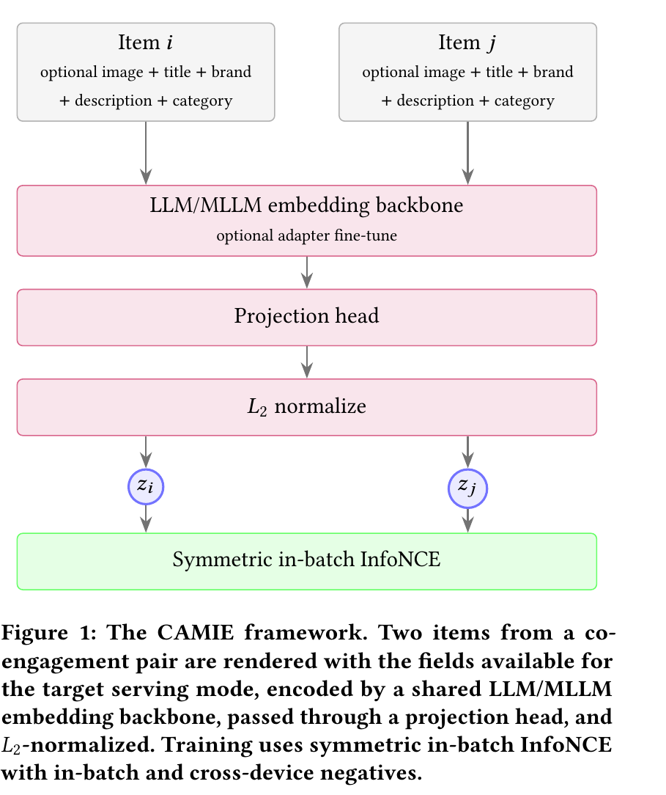
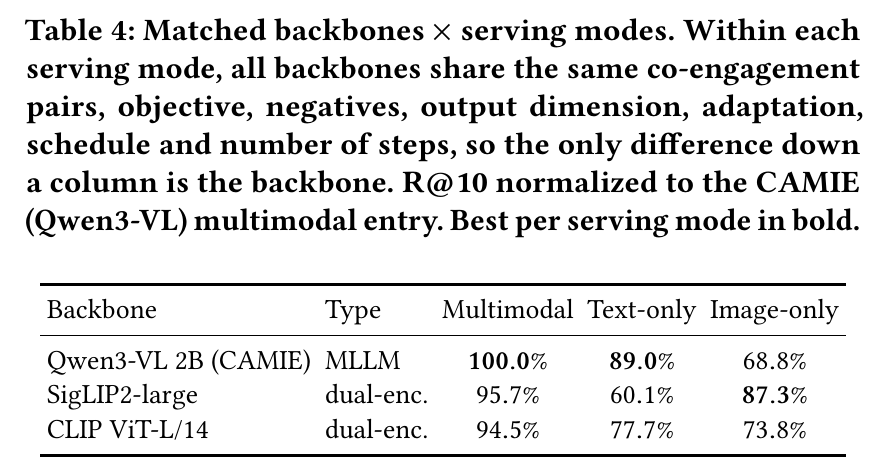

CAMIE: Co-Engagement-Aware Multimodal Item Embeddings for Snap Dynamic Product Ads Retrieval
CAMIE 面向 Snap 动态商品广告的 I2I 召回，把图像与商品元数据送入同一 LLM/MLLM 原生多模态接口，再用用户旅程挖掘的共参与商品对和对称式 in-batch InfoNCE 对齐转化行为。线上替换两个内容编码器后，相对多模态对照 CTR +0.390%、CVR +10.832%，整体 DPA 流量 CTR +0.211%、CVR +1.911%。
INSIGHT关键不是继续堆独立视觉/文本塔，而是让统一内容空间接受真实共参与信号监督，使相似性直接靠近转化目标。该方案可作为现有 I2I 向量源的低风险替换：保持 ANN 基础设施不变，以统一 checkpoint 支持多模态和纯文本召回，并通过离线 Recall@10 与线上 CTR/CVR 双重把关。
CAMIE：商品向量的大部分收益来自“用户一起互动过”的监督，而不是换成多模态大模型
我的判断：做 I2I 召回或商品向量的团队值得读，主要因为它回答了一个大家常在争的问题：把商品编码器换成多模态大模型（MLLM），收益到底来自模型本身，还是来自训练用的监督信号。CAMIE（Co-Engagement-Aware Multimodal Item Embeddings，意思是“考虑共同互动的多模态商品向量”）来自 Snap 动态商品广告（DPA）团队，已上线替换了两套旧编码器。核心思想一句话：用 Qwen3-VL-Embedding 2B 把商品图片和文字一起编码成一个向量，再用从用户浏览路径里挖出的“共同互动商品对”做对比学习微调，同一个模型同时服务多模态和纯文本两条召回线。几个关键数字：同一个底座，微调后 R@10 比微调前高 37.7%；而在完全相同的训练配方下，换不同底座（MLLM、SigLIP2、CLIP）的多模态 R@10 最多只差 5.8%；线上替换旧的多模态 I2I 编码器后，这条召回线的 CVR +10.832%。
它到底在解决什么问题？
I2I 召回的输入是一个种子商品，输出是“相关”的商品。线上通常离线把整个商品库编码好、建 ANN 索引，请求来了只查一次，延迟低，冷启动商品也能覆盖。
问题一：相似不等于会一起买。用一个示意例子看：
| 示意 | 种子：白色亚麻衬衫 | 内容相似度会召回 | 用户实际会一起看、一起买 |
|---|---|---|---|
| 商品 A | – | 另一件白色衬衫（长得像） | 同店的亚麻长裤 |
| 商品 B | – | 白色 T 恤（颜色、品类像） | 同系列的另一个颜色 |
| 商品 C | – | 白色床单（材质词相同） | 搭配的草编凉鞋 |
CLIP/SigLIP 这类模型学的是“图文是否匹配”，把它直接用来做 I2I，召回的是长得像、写得像的商品，而广告关心的是用户接下来会点、会买的商品。
问题二：模态割裂。线上往往同时维护纯文本、纯图片和多模态三套编码器，各有各的微调、刷新流程和 ANN 索引。论文要的是一个模型、一套训练，同时能服务这几条线。
这篇论文真正想回答的是一个归因问题：效果提升有多少来自更强的 MLLM 底座，有多少来自“共同互动”这种行为监督。它用一个对照实验把两者拆开了，这是它比同类工作（例如小红书的 NoteLLM）多走的一步。
先看全景

| 步骤 | 做什么 | 为什么需要 |
|---|---|---|
| 1. 挖商品对 | 从 30 天的用户路径里找同一用户在一小段时间内互动过的两个商品 | 这是“会一起看、一起买”的直接证据 |
| 2. 渲染输入 | 把图片和“Title: … Brand: … Description: … Category: …”拼成一条记录 | 换模态时只改拼哪些字段，模型不变 |
| 3. 编码 | 冻结的 Qwen3-VL-Embedding 2B 加 LoRA，取最后一个 token，过投影头 | 底座自带多模态接口，不用另做融合模块 |
| 4. 训练 | 对称 InfoNCE，负样本是 batch 内和跨卡收集到的其他商品 | 把“一起互动”的商品拉近 |
| 5. 上线 | 商品库刷新时离线编码，写进 ANN 索引；请求时查一次 | 在线链路和旧的内容 I2I 一样，延迟形态不变 |
拆开看：商品对怎么挖、损失怎么算
商品对按什么规则挖？ 对每个用户 30 天内的路径按商品去重，每个用户最多采 2 对。保留浏览、点击、加购、购买四种行为，不只用高意向行为。然后过一组过滤：归因必须是论文所说的“精确匹配”类型（字面意思是这次互动能精确归到具体的广告商品，论文没有给出更细的定义），标题和图片都不能为空，两个商品属于同一个广告主，一级类目一致，时间衰减权重至少 0.5。时间衰减用 7 天半衰期，权重是 0.5 的（间隔天数 / 7）次方。
手算一下这条规则的含义：两次互动隔 3 天，权重 0.5^(3/7) ≈ 0.74，保留；隔 7 天正好是 0.5，刚好卡在线上；隔 10 天约 0.37，被过滤掉。所以“权重至少 0.5”等价于只保留一周内的共同互动。为什么要“同一广告主”？论文的通用规则要求两个商品属于同一个“服务范围”，也就是线上允许互相召回的商品集合；在 DPA 的实验里，这一条落成了“同一个广告主”。范围外的商品对，线上本来就召回不到，学了也用不上。离线实验用 1000 万训练对、10 万测试对；上线模型用同一流程挖的 1 亿对。
对称 InfoNCE 怎么算？ 一个 batch 有 N 个商品对。对第 n 对，把 i_n 当查询，j_n 是正样本，其余 N−1 个 j 是负样本，算一次 softmax 交叉熵；再反过来把 j_n 当查询、i 们当候选算一次，两者平均。
示意：batch 里 3 对，i_1 和三个 j 的余弦是 0.8、0.2、0.1，温度取 0.5。除以温度后是 1.6、0.4、0.2，取指数约 4.95、1.49、1.22，正样本的概率是 4.95/7.66 ≈ 0.65，这一项损失 −ln 0.65 ≈ 0.44。为什么要对称？因为“一起互动”没有方向，衬衫→长裤和长裤→衬衫是同一种关系，两个方向都要学。论文实际用可学习温度，初值 0.07。
换模态为什么不用重训？ 服务纯文本线时，只是不把图片拼进输入；服务纯图片线时，只拼图片。底座和投影头完全不变。这就是“一个 checkpoint 多条线”的含义。
这套方案真的更好吗？
论文按 Snap 的规定只报相对值，离线以“没有微调的 Qwen3-VL-Embedding 2B、多模态输入”为 100%，测试时每个查询商品要在测试集出现过的所有商品里找到它的配对商品。
| 模型 | 类型 | 输入 | R@1 | R@10 | MRR |
|---|---|---|---|---|---|
| Qwen3-VL-Embedding 2B | CAMIE 微调 | 多模态 | 126.4% | 137.7% | 130.5% |
| Qwen3-VL-Embedding 2B | 未微调 | 多模态 | 100.0% | 100.0% | 100.0% |
| Qwen3-VL-Embedding 2B | CAMIE 微调 | 纯文本 | 117.8% | 122.5% | 116.4% |
| Gemini Embedding 2 | 商用 API | 多模态 | 129.1% | 129.9% | 129.4% |
| Gemma 4 E2B | CAMIE 微调 | 多模态 | 94.5% | 108.2% | 100.0% |
这张表能读出三点。第一，同一个底座，微调带来 37.7% 的 R@10 提升，说明行为监督本身就是大头。第二，没微调时，加图片反而不如只用文字（纯文本 111.1% 对多模态 100%）；微调后图片才开始有用（137.7% 对 122.5%），所以图片的价值要靠行为监督才能释放出来。第三，CAMIE 在 R@10 上比最强的商用模型 Gemini Embedding 2 高约 6%，向量还小得多（512 维对 3072 维），但在 R@1 上 Gemini 仍略好。
一个模型能不能顶替纯文本编码器？ 多模态训练的模型只喂文字时，R@10 是多模态的 87.9%，专门用纯文本训练的模型是 89.0%，只差 1.1 个百分点。这说明纯文本线可以直接合并到同一个模型上。纯图片输入只有 67.0%，专门训的纯图片版也只有 68.8%，说明问题不在“合并”，而在这个底座本身不擅长只看图。
收益到底来自底座还是监督？ 这是全文最关键的实验。作者用完全相同的配方训了两个非大模型的双塔：SigLIP2-large 和 CLIP ViT-L/14。商品对、损失、负样本数、输出维度、LoRA 设置、学习率和步数都一样，唯一的差别是底座。

这说明行为监督是收益的大头：三个底座用同样的商品对训完，多模态 R@10 最多差 5.8%，而微调本身带来 37.7%。MLLM 的优势在两处：多模态上比 SigLIP2 高 4.3 个百分点，作者做了配对 bootstrap 和置换检验，p<0.001；纯文本上优势大得多。纯图片则应该交给专门的视觉塔。作者还给了一个训练曲线：在一个 epoch 的 40% 处，两个双塔就基本饱和了，MLLM 一直涨到最后，和 SigLIP2 的差距从 20% 处的 2.3 个百分点拉大到最后的 4.3 个百分点。
还有一个数据量和纯度的对比：只用加购和购买对，数量约为全量的三分之一；以“从全行为对里随机采三分之一”为基准：同样三分之一的规模，只用高意向对 R@10 只高 1.6%；用全量的全行为对，R@10 高 8.9%。这说明对这个任务，多保留数据比只挑高意向行为更划算。
上线后效果如何？ 线上做的是随机 A/B，其他服务组件保持不变：
| 对比 | CTR | CVR |
|---|---|---|
| DPA 整体流量 | +0.211%（不显著） | +1.911% |
| 替换多模态 I2I 编码器那条线 | +0.390%（不显著） | +10.832% |
| 替换纯文本 I2I 编码器那条线 | +18.958% | +13.12% |
三个 CVR 提升和纯文本线的 CTR 提升在 99% 置信度下显著。线上的旧多模态编码器本身就是 SigLIP2-large，只不过是用内容标签训的。结合上面的匹配实验，这说明线上的增益主要来自“把监督换成共同互动”，而不是换了底座。
我认为它的局限
第一，离线测试集本身偏向这种训练方式。测试对和训练对用同一个流程从共同互动里挖出来，所以任何用这个信号训过的模型都占便宜，未微调的底座和商用 API 天然吃亏。作者自己也承认离线集“无法公平衡量”监督方式的差异。所以 37.7% 和“超过 Gemini 6%”更多说明“对齐到自己的行为分布有用”，不能当作通用向量质量的比较。
第二，匹配对照对双塔可能不利。有效 batch 只有 32 到 64，因为 2B 的 MLLM 在 40GB 显卡上放不下更大的 batch，作者就把所有底座的负样本数都固定在 MLLM 能承受的上限。CLIP/SigLIP 这类对比学习模型通常很依赖大 batch 的负样本，固定在这么小的 batch 上，它们 5% 左右的差距里可能有一部分来自这个限制。论文说这样“算力和负样本对齐、不偏向 CAMIE”，但没有给双塔用大 batch 的对照。
第三，线上和离线用的不是同一个模型。离线表里的模型用 1000 万对训练、输出 512 维；上线模型用 1 亿对训练，而且为了让索引和旧的一样大，只取向量的前 128 维。论文没说训练时有没有针对截断做处理，也没有报 128 维的离线数字，所以离线表并不能直接说明上线模型的质量。纯文本线的旧编码器也没有离线评估，它的 +18.958% CTR 缺少离线对照。
一个推荐/搜索团队可以怎么试
- 先不换底座。拿现在线上的内容向量模型（例如 CLIP 或 SigLIP 系列），用同一用户一周内共同互动过的商品对做对比学习微调，按论文的过滤规则去噪。按论文的结论，这一步就能拿到大部分收益。
- 测试集要两套：一套用同样方式挖的共同互动对，一套和训练信号无关的人工相关性标注，避免第一套测试集偏向行为监督。
- 如果同时维护多模态和纯文本两套编码器，再试一个多模态大模型底座，用“拼不拼图片”的方式同时服务两条线，比较纯文本线和专用文本模型的差距。纯图片线保留专门的视觉塔。
- 挖商品对时比较“只用高意向行为”和“全行为、更多数据”，在相同规模和不同规模下各看一次，确认自己数据上数据量和纯度哪个更重要。
- 上线前先离线测好截断维度后的效果，再决定索引维度。
一句话结论
商品向量要对齐的是用户的行为，而不是内容本身；CAMIE 用一个干净的对照实验说明，行为监督带来了绝大部分收益，多模态大模型的价值主要在于让一个模型同时撑起多模态和纯文本两条召回线。
| 维度 | 评价 |
|---|---|
| 问题重要性 | 高。I2I 召回和商品向量在电商、广告里普遍存在，“该不该换大模型底座”是实际决策 |
| 方法创新性 | 中。共同互动对比学习和 MLLM 向量都不新，新意在严格的归因对照 |
| 实验证据 | 中高。有匹配配方对照和显著性检验，有随机 A/B；但离线集偏向行为监督，线上模型和离线不同 |
| 工程成本 | 中。2B 底座加 LoRA，离线编码商品库的成本比双塔高；在线链路不变 |
| 是否值得尝试 | 值得，先在现有内容模型上加行为监督，再考虑换底座 |
| 适用场景 | 有用户路径日志、需要同时服务多模态和纯文本召回的商品 I2I |